Workflow Data Ingestion and File Conversion
Data Ingestion:
Data ingestion is the transportation of data from assorted sources to a storage medium where it can be accessed, used, and analyzed by an organization.
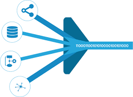
The destination is typically a data warehouse, data mart, database, or a document store.
Phase 2:
| Data Connector Utils | File Conversion Utils |
|---|---|
| Spatial File | OpenDocument Spreadsheets |
| Statistical File | |
| Tableau Server or Tableau Online | |
| Actian Matrix | |
| Teradata OLAP Connector | |
| TIBCO Data Virtualization | |
| Vertica | |
| Teradata |
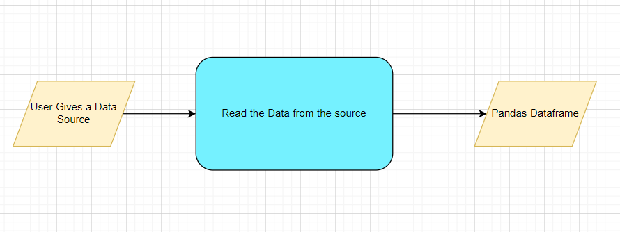
| Class Name | DataGetter | |
|---|---|---|
| Method Name | read_data_from_csv | |
| Method Description | This method will be used to read data from a csv file or a flat file | |
| Input parameter names | self,file_name, header,names, use_cols, separator | |
| Input Parameter Description | file_name: name of the file to be read header: Row number(s) to be used as column names names : array-like, optional List of column names to use. If file contains no header row, then you should explicitly pass header=None. Use_cols: To load a subset of columns Separator: Delimiter to use |
|
| ouptput | A pandas Dataframe | |
| On Exception | Write the exception in the log file. Raise an exception with the appropriate error message | |
| Method Name | read_data_from_json | |
| Method Description | This method will be used to read data from a json file. | |
| Input parameter names | self,file_name | |
| Input Parameter Description | file_name: name of the file to be read | |
| ouptput | A pandas Dataframe | |
| On Exception | Write the exception in the log file. Raise an exception with the appropriate error message | |
| Method Name | read_data_from_html | |
| Method Description | This method will be used to read data from an HTML web page Input parameter names self,url | |
| Input Parameter Description | url: URL of the HTML page to be read. | |
| ouptput | A pandas Dataframe | |
| On Exception | Write the exception in the log file. Raise an exception with the appropriate error message | |
| Method Name | read_data_from_excel | |
| Method Description | This method will be used to read data from an MS Excel File | |
| Input parameter names | self,file_name,sheet_name, header,names, use_cols, separator | |
| Input Parameter Description | file_name: name of the file to be read sheet_name: Lists of strings/integers are used to request multiple sheets. Specify None to get all sheets. header: Row number(s) to be used as column names names : array-like, optional List of column names to use. If file contains no header row, then you should explicitly pass header=None. Use_cols: To load a subset of columns Separator: Delimiter to use |
|
| ouptput | A pandas Dataframe | |
| On Exception | Write the exception in the log file. Raise an exception with the appropriate error message | |
| Method Name | Connect_to_sqldb | |
| Method Description | This method will be used to connect to a SQL Databases | |
| Input parameter names | self,host,port, username, password | |
| Input Parameter Description | host: the server hostname/IP where the DB server is hosted Port: the port at which the DB Server is running username: The username to connect to the DB server password: The password to connect to the DB server | |
| ouptput | A DB connection object | |
| On Exception | Write the exception in the log file. Raise an exception with the appropriate error message | |
| Method Name | read_data_from_sqldb | |
| Method Description | This method will be used to read data from SQL Databases | |
| Input parameter names | self,db_name,host,port, username, password, schema_name,query_string | |
| Input Parameter Description | db_name: For example, SQL, MySQL, SQLLite etc. host: the server hostname/IP where the DB server is hosted Port: the port at which the DB Server is running username: The username to connect to the DB server password: The password to connect to the DB server schema_name: The name of the DB schema the user wants to connect to. query_string: the query to be executed to load the data | |
| ouptput | A Pandas Dataframe | |
| On Exception | Write the exception in the log file. Raise an exception with the appropriate error message Method Name read_data_from_mongdb | |
| Method Description | This method will be used to read data from Mongo DB | |
| Input parameter names | self,host,port, username, password, db_name,collection_name, query_string. Input Parameter Description | |
| output | A Pandas Dataframe | |
| On Exception | Write the exception in the log file. Raise an exception with the appropriate error message |
Exceptions Scenarios
| Step | Exception | Mitigation |
|---|---|---|
| User gives Wrong Data Source | Give proper error message | Ask the user to re-enter the details |
| User gives corrupted data | Give proper error message |
Data Profiling
Data profiling is the process of reviewing source data, understanding structure, content and interrelationships, and identifying potential for data projects.
After reading the data, automatically the following details should be shown: a) The number of rows b) The number of columns c) Number of missing values per column and their percentage d) Total missing values and it’s percentage e) Number of categorical columns and their list f) Number of numerical columns and their list g) Number of duplicate rows h) Number of columns with zero standard deviation and their list i) Size occupied in RAM
Method Definition
| Class Name | DataProfiler | |
|---|---|---|
| Method Name | get_data_profile | |
| Method Description | This method will be used to give various insighst about data. | |
| Input parameter names | self, dataframe | |
| Input Parameter Description | dataframe: the inpt data just loaded from source | |
| ouptput | a) The number of rows | |
| b) The number of columns | ||
| c) Number of missing values per column and their percentage | ||
| d) Total missing values and it’s percentage | ||
| e) Number of categorical columns and their list | ||
| f) Number of numerical columns and their list | ||
| g) Number of duplicate rows | ||
| h) Number of columns with zero standard deviation and their list | ||
| i) Size occupied in RAM | ||
| On Exception | Write the exception in the log file. Raise an exception with the appropriate error message |
Stats based EDA:
MVP: Minimum Viable Product Building a minimum viable product is an opportunity to quickly test an idea and see if it works. It doesn't need to be the best solution, it should just be a usable solution. If it is, then we can move on to the development stage and make it work well.
OLS: Ordinary least squares The OLS method corresponds to minimizing the sum of square differences between the observed and predicted values.
VIF: The variance inflation factor (VIF) is the quotient of the variance in a model with multiple terms by the variance of a model with one term alone. It quantifies the severity of multicollinearity in an ordinary least squares regression analysis. Correlation: Correlation is a statistical technique that can show whether and how strongly pairs of variables are related
Phase1:
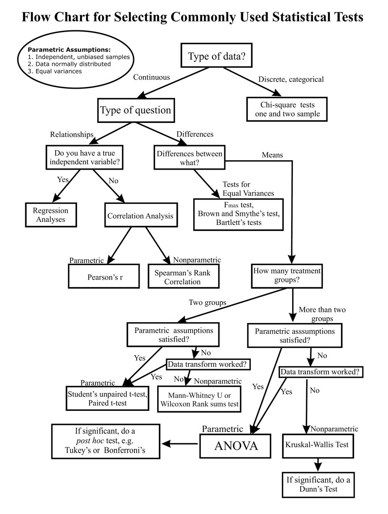
Anova test: An ANOVA test is a way to find out if survey or experiment results are significant. In other words, they help you to figure out if you need to reject the null hypothesis or accept the alternate hypothesis. Basically, you're testing groups to see if there's a difference between them.
Chi-square test Pearson's chi-square test is used to determine whether there is a statistically significant difference between the expected frequencies and the observed frequencies in one or more categories of a contingency table.
Z-test A z-test is a statistical test to determine whether two population means are different when the variances are known and the sample size is large. It can be used to test hypotheses in which the z-test follows a normal distribution. A z-statistic, or z-score, is a number representing the result from the z-test.
T test The t test is one type of inferential statistics. It is used to determine whether there is a significant difference between the means of two groups. With all inferential statistics, we assume the dependent variable fits a normal distribution
Weight of evidence The weight of evidence tells the predictive power of an independent variable in relation to the dependent variable.
F-test An F-test is any statistical test in which the test statistic has an F-distribution under the null hypothesis. It is most often used when comparing statistical models that have been fitted to a data set, in order to identify the model that best fits the population from which the data were sampled.
Technical solution design 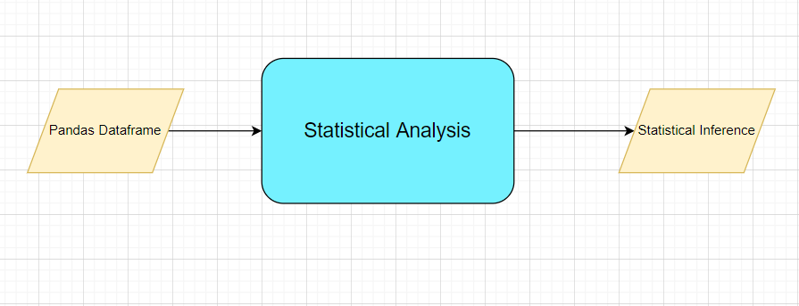
Exceptions Scenarios Module Wise
| Step | Exception | Mitigation |
|---|---|---|
| Column has mixed values(Integer & number) | Give proper error message | Ask the user to correct the data. |
| Not all values are numbers | Handle Internally | Convert categorical to numerical values |
Phase 2:
Seasonality: Seasonality is a characteristic of a time series in which the data experiences regular and predictable changes that recur every calendar year. Any predictable fluctuation or pattern that recurs or repeats over a one-year period is said to be seasonal.
Stationary Data: A common assumption in many time series techniques is that the data are stationary. A stationary process has the property that the mean, variance and autocorrelation structure do not change over time
4 Graph-Based EDA
Create the following graphs: MVP: Correlation Heatmaps Check for balance/imbalance Phase1: Count plots Boxplot for outliers Piecharts for categories Geographical plots for scenarios Line charts for trends Barplots Area Charts KDE Plots Stacked charts Scatterplot
Phase 2: Word maps PACF ACF Add Custom controls sliders etc
Graphical EDA:
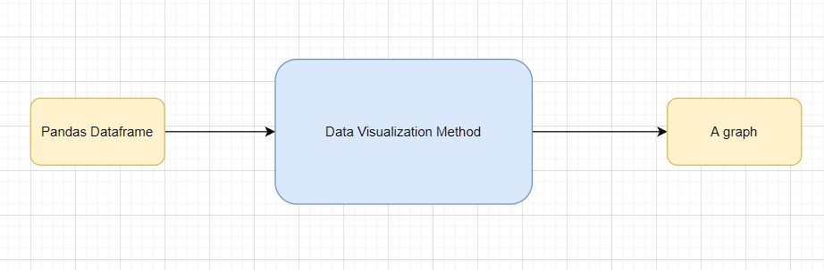
| Class Name | DataVisualization | |
|---|---|---|
| Method Name | read_data_from_csv | |
| Method Description | This method will be used to read data from a csv file or a flat file | |
| Input parameter names | self,file_name, header,names, use_cols, separator | |
| Input Parameter Description | file_name: name of the file to be read header: Row number(s) to be used as column names names : array-like, optional List of column names to use. If file contains no header row, then you should explicitly pass header=None. Use_cols: To load a subset of columns Separator: Delimiter to use |
|
| output | A pandas Dataframe | |
| On Exception | Write the exception in the log file. Raise an exception with the appropriate error message |
Exceptions Scenarios Module Wise
| Step | Exception | Mitigation |
|---|---|---|
| Wrong input to the methods | Handle Internally | Code should never give a wrong input |
Phase 2: A time series can have components like trend, seasonality, cyclic and residual. ACF considers all these components while finding correlations hence it's a 'complete auto-correlation plot'. PACF is a partial auto-correlation function.
More about sliders: https://plotly.com/python/sliders/
5. Library Based Utils
Technical solution design Exceptions Scenarios Module Wise
6. Data Transformers( Pre-processing steps)
MVP: Null value handling Categorical to numerical Imbalanced data set handling Handling columns with std deviation zero or below a threshold Normalisation PCA
Phase1: Outlier detection Data Scaling/ Normalisation Feature Selection: https://scikit-learn.org/stable/auto_examples/index.html#feature-selection
| Class Name | DataPreprocessor | |
|---|---|---|
| Method Name | impute_missing_values | |
| Method Description | This method will be used to read data from a csv file or a flat file. | |
| Input parameter names | self,file_name, header,names, use_cols, separator. Input Parameter Description file_name: name of the file to be read. header: Row number(s) to be used as column names. names : array-like, optional. List of column names to use. If file contains no header row, then you should explicitly pass header=None. Use_cols: To load a subset of columns. Separator: Delimiter to use. |
|
| output | A pandas Dataframe | |
| On Exception | Write the exception in the log file. Raise an exception with the appropriate error message |
Exceptions Scenarios Module Wise
| Step | Exception | Mitigation |
|---|---|---|
| Wrong parameters passed to the methods | Handle Internally | Code should never give a wrong input |
7 ML Model Selection:
Model selection is the process of selecting one final machine learning model from among a collection of candidate machine learning models for a training dataset. Model selection is a process that can be applied both across different types of models (e.g. logistic regression, SVM, KNN, etc.) and across models of the same type configured with different model hyperparameters (e.g. different kernels in an SVM). MVP: 3 Models—KNN, RandomForest, XGBoost
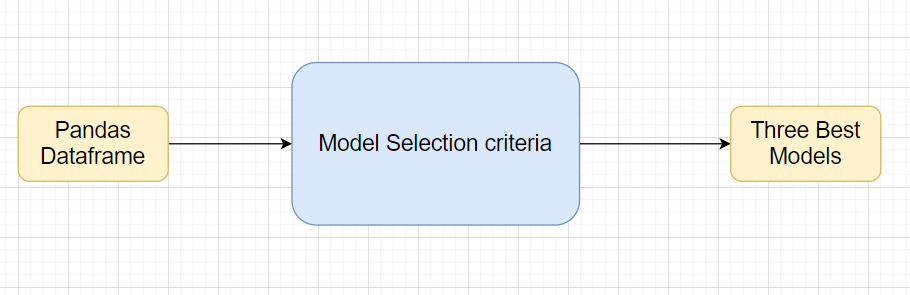
Phase1: Model Selection criteria Technical solution design
Step Exception Mitigation Wrong parameters passed to the methods Handle Internally Code should never give a wrong input
8. Model Tuning and Optimization**
Note: The data should have been divided into train and validation set before this. Methods for hyper tuning all kinds of models. Regression: Linear Regression Decision Tree Random Forest XG Boost Support Vector Regressor KNN Regressor
Model selection criteria: MSE, RMSE, R squared, adjusted R squared
Classification: Logistic Regression Decision Tree Random Forest XG Boost Support Vector Classifier KNN Classifier Naïve Baye’s
Model selection criteria: Accuracy, AUC, Precision, Recall, F Beta
Clustering: K-Means Hierarchial DBSCAN
Phase 2: GLM GAM (https://www.statsmodels.org/stable/regression.html) Time Series Anomaly Detection Novelty Detection Optics Gaussian Mixtures BIRCH NLP Deep Learning Regularization modules if necessary
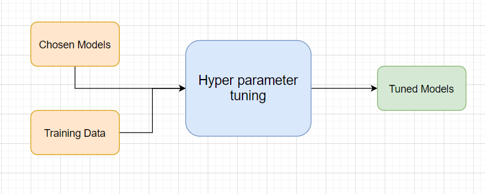
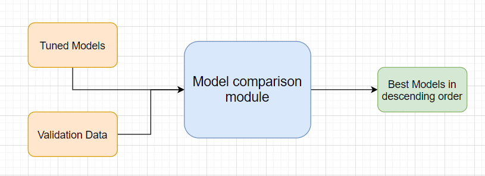
| Class Name | ModelTuner | |
|---|---|---|
| Method Name | get_tuned_knn_model | |
| Method Description | This method will be used to get the hypertuned KNN Model | |
| Input parameter names | self,data | |
| Input Parameter Description | Data: the training data Hyperparameters to tune | |
| ouptput | A hyper parameter tuned model object | |
| On Exception | Write the exception in the log file. Raise an exception with the appropriate error message |
| Exceptions | Scenarios | Module Wise |
|---|---|---|
| Step | Exception | Mitigation |
9. Testing Modules
Divide the training data itself into train and test sets Use test data to have tests run on the three best models Give the test report a) R2 Score b) Adjusted R2 score c) MSE d) Accuracy e) Precision f) Recall g) F Beta h) Cluster Purity i) Silhouette score
Phase 2 AIC BIC
Note: Save the best model after validation is completed.
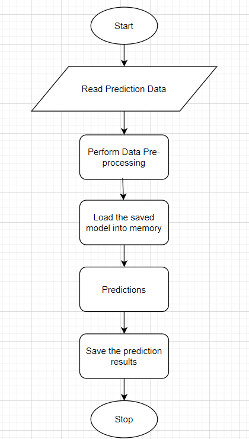
| Step | Exception | Mitigation |
|---|---|---|
| Number of Parameters do not match | Handle internally | Check the test data creation and verify the columns |
| Only once class present in test data | Handle Internally |
10. Prediction Pipeline
Use the existing data read modules Use the existing pre-processing module Load the model into memory Do predictions Store prediction results(show sample predictions)

Phase 2: UI for predictions
| Step | Exception | Mitigation |
|---|---|---|
| Columns don’t match in training and Prediction data | Show error message | The user enters the correct data |
11 Deployment Strategy
Take the cloud name as input Prepare the metadata files based on cloud Phase 2: Accept the user credentials Prepare a script file to push changes Docker instance Push of the docker instance to cloud
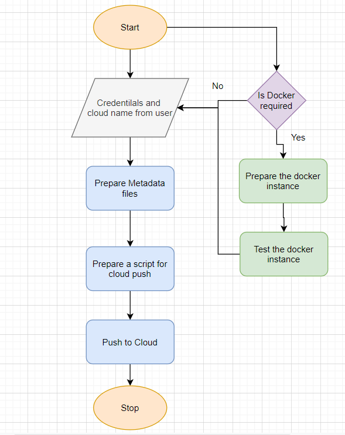
| Step | Exception | Mitigation |
|---|---|---|
| Wrong Cloud credentials | Show error message | The user enters the correct data |
| Docker instance not working | Show error message | Fix the error |
| Cloud push failed | Show the error | Make corrections to the metadata files |
| Cloud app not starting | Ask the user for cloud logs for debugging |
12. Monitoring
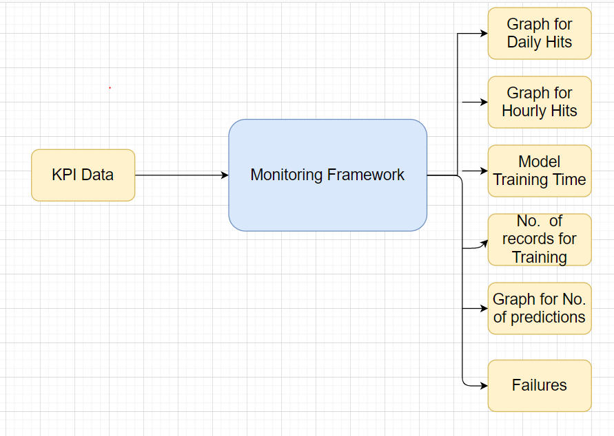
Phase 2 No. Of predictions for individual classes No. of predictions (per day, per hour, per week etc.) No. of hits Training data size (number of rows) Time spent in training Failures
13 Logging
Separate Folder for logs Logging of every step Entry to the methods Exit from the methods with success/ failure message Error message Logging Model comparisons Training start and end Prediction start and end Achieve asynchronous logging

Phase 2: Options for Logging in DB Options for Log Publish
| Class Name | App Logger |
|---|---|
| Method Name | log |
| Method Description | This method will be used for logging all the information to the file. |
| Input parameter names | self,file_object, log_message |
| Input Parameter Description | file_object: the file where the logs will be written |
| log_message: | the message to be logged |
| ouptput | A log file with messages |
from datetime import datetime
class App_Logger:
def __init__(self):
pass
def log(self, file_object, log_message):“””This method will be used for logging all the information to the file.”””
self.now = datetime.now()
self.date = self.now.date()
self.current_time = self.now.strftime("%H:%M:%S")
file_object.write(
str(self.date) + "/" + str(self.current_time) + "\t\t" + log_message +"\n")
13.3 Exceptions Scenarios Module Wise
\ \ \ \ \ \ \ \ \